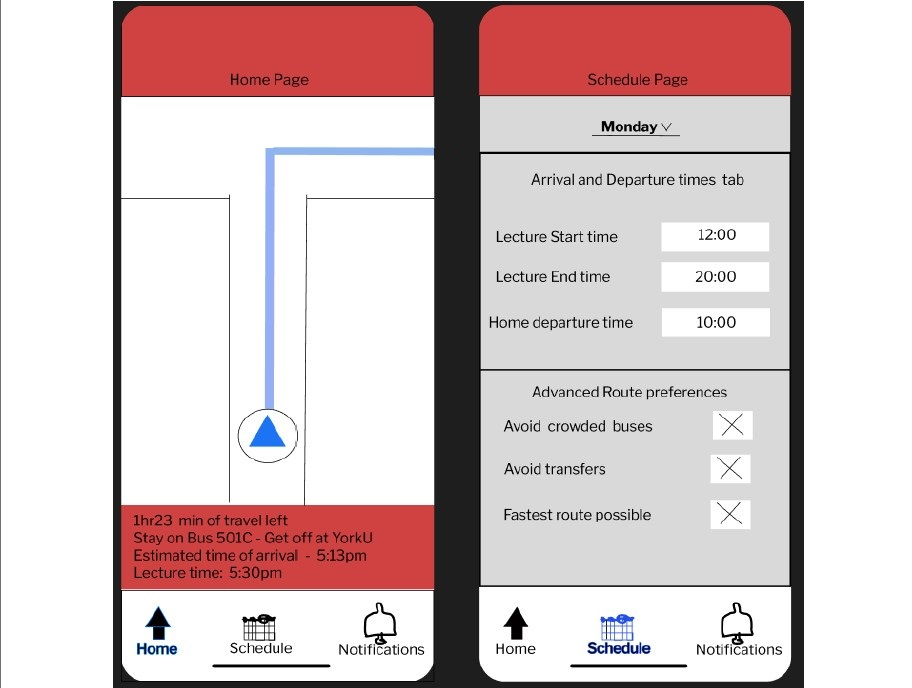

Student Navigation App - Design process
In this project, I followed the Double Diamond of Design in order to create a mobile app, implementing human-centred design methodologies. I also had to follow UX design principles; designing intuitive and visually appealing user interfaces, focusing on clarity, accessibility, and ease of use to improve User Experience and app adoption rates.
For this application, we also had to create wireframes to visualize the user journey and ensure an intuitive flow. I developed low-fidelity wireframes to map out the core functionalities and interactions, refining them through several iterations based on feedback. This process helped identify key design challenges early on and allowed for adjustments that improved the app's usability and overall user experience.
For my first Lo-fidelity prototype of this app, I created some wireframes:
Using Figma, I transformed initial wireframes into detailed mockups and high-fidelity prototypes, enhancing the design's visual fidelity and interactivity. Starting with low-fidelity wireframes, I focused on structuring the user interface (UI) elements to map out the core functionality and navigation flows. As the design progressed, I utilized Figma's robust design tools to refine these wireframes into pixel-perfect mockups, incorporating UI components such as color schemes, typography, icons, and imagery to create a visually cohesive and polished design.
My final mockups can be found below:
Thank you for taking the time to explore my work! I’m excited to leverage the skills and knowledge I've gained from these projects and apply them in a real-world job setting. Working on UI/UX was a very fun experience and I would love to do more of it.